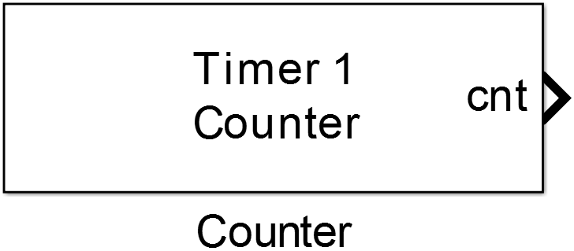
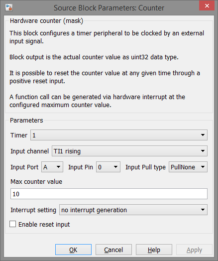

13.2.3. Counter
This block configures a timer peripheral to be clocked by an external input signal.
13.2.3.1. Library
Targets/STM/DISCO_F407VG
13.2.3.2. Description
{kind=link}
This block configures a hardware timer peripheral of an STM32 MCU to be clocked by an external input signal. For clock input each timer has two trigger input (TIx) sources which are mapped to the timers input channels TIMx_CH1 and TIMx_CH2. So to use this block for counting external events the correct GPIO Port and Pin has to be chosen and also the matching TIx of the selected TIMERx peripheral according to the data sheet of the used MCU.
It is possible to count on rising, falling and both edges of the signal at the input pin.
The timer’s counter register is automatically reset at the configured Max counter value parameter or at a nonzero input value at the reset input. The block can be configured to generate a hardware interrupt at counter overflow to execute a function call subsystem.
Warning
The timer can only be clocked by one input and the can not be used for any other purpose even if there are unused channels provided (e.g. CH3/4). Configuring another block using the same timer peripheral could override some or all of the timer’s control registers and lead to unexpected behavior.
13.2.3.3. Data Type Support
The block’s reset input port expects a uint8 data type which is either zero for normal upcounting or none zero for a reset of the counter register.
The cnt output port outputs the actual counter value as an uint32 data type.
The int output port is a simulink function call output which can be connected to a function call subsystem.
13.2.3.4. Parameters and Dialog Box
Timer
Number of the actual timer peripheral of the STM32 MCU, e.g. chosing 1 configures TIMER1 in external counter mode.
Input channel
Choses either trigger input TI1 or TI2 as the clock source and configures the edge on which the timer is counting.
Input Port
Selection of the GPIO port where the configured trigger input is mapped to.
Input Pin
Selection of the GPIO pin number where the configured trigger input is mapped to.
Input Pull type
Configures the input mode for the selected MCU pin, possible values are:
- PullNone: no pull up or pull down resistors are configured for the input pins
- PullUp: internal pull up resistors are configured for both input pins
- PullDown: internal pull down resistors are configured for both input pins
Max counter value
Sets the maximum value the counter register can hold before an overflow occours.
Note
The maximum possible value is 2^16-1 since the timers have a 16bit counter register, except Timer2 it is a 32 bit type.
Interrupt setting
Configures the output ports of the counter block as follows: * no interrupt generation: no hardware interrupt is generated at counter overflow, the actual counter value can be read at the cnt output * interrupt + cnt output: a hardware interrupt is generated at counter overflow and executes the code of the connected function call subsystem in it’s ISR, the actual counter value can be read at the cnt output * only interrupt: a hardware interrupt is generated at counter overflow and executes the code of the connected function call subsystem in it’s ISR, the counter value is not provided
Enable reset input
Enables the reset input port of the block to reset the counter register at any time